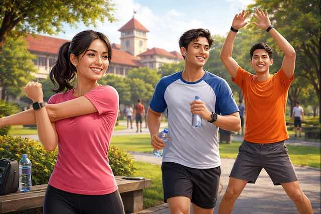
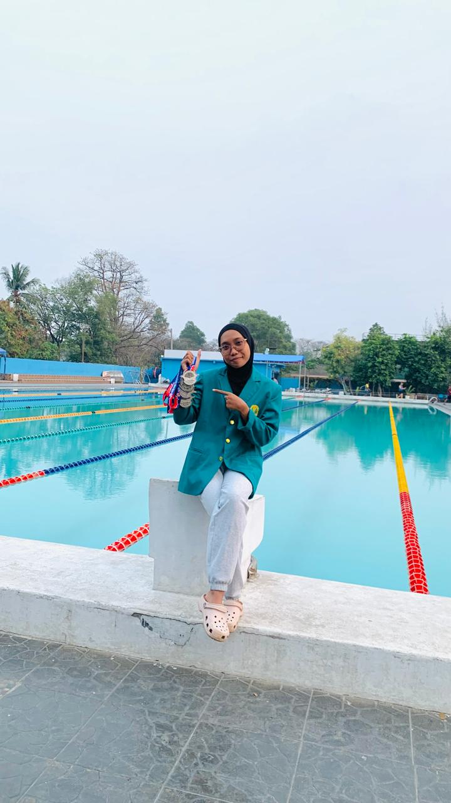
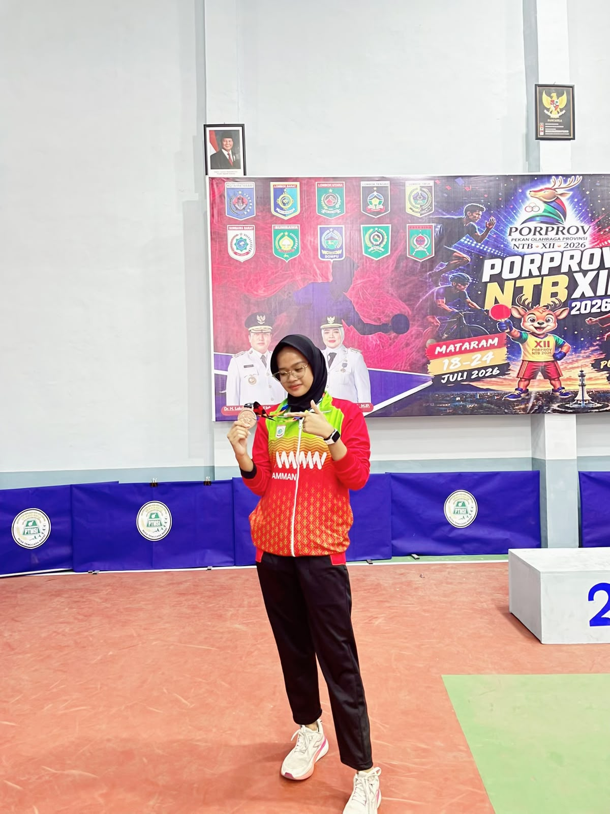
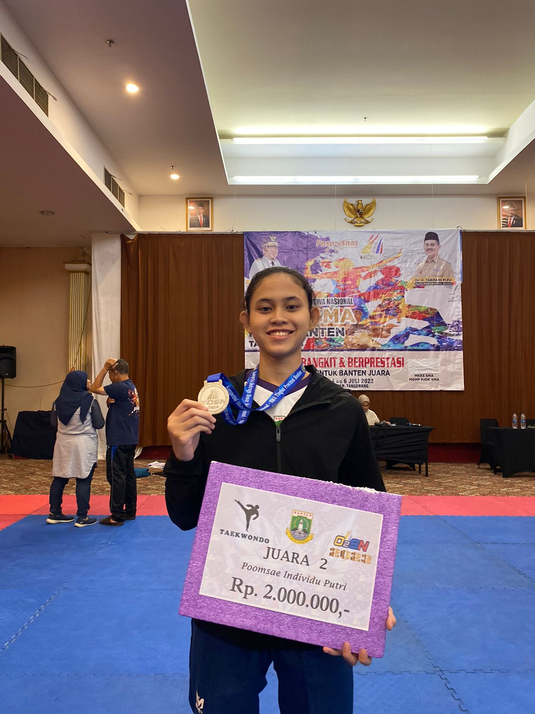
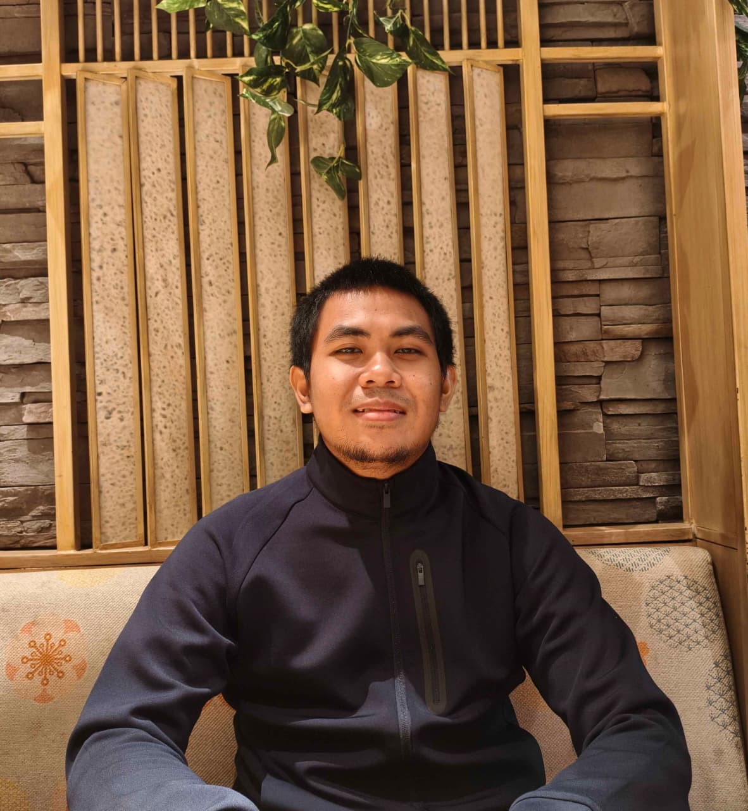

Pemanasan
Menyiapkan jantung, otot, dan sendi sebelum bergerak. Pemanasan yang cukup membantu tubuh bersiap menerima beban latihan.
Proyek UTS · Data Raya & Pemrograman · Sport Science
Mulai bergerak tanpa takut cedera. Di sini kamu belajar pemanasan, mencegah cedera, dan pemulihan setelah latihan — dijelaskan pakai bahasa sehari-hari, bukan bahasa buku teks.

Semua materi di website ini berdiri di atas tiga kunci sederhana ini. Pahami ketiganya, dan kamu sudah selangkah lebih aman daripada kebanyakan pemula.
Menyiapkan jantung, otot, dan sendi sebelum bergerak. Pemanasan yang cukup membantu tubuh bersiap menerima beban latihan.
Kenali cedera yang sering terjadi, pelajari teknik dasar yang benar, dan naikkan intensitas latihan sedikit demi sedikit — bukan sekaligus.
Tubuh membutuhkan waktu untuk pulih setelah latihan. Tidur cukup, makan seimbang, dan hari istirahat merupakan bagian dari program latihan, bukan kemalasan.
ARTIKEL POPULER
Empat artikel paling sering dibaca pemula, ditambah bahasan khusus atlet dan performa. Klik kartu mana pun untuk membaca versi lengkapnya, lengkap dengan tips praktis dan sumber ilmiahnya.
Fitur interaktif
Tujuh pertanyaan singkat tentang pemanasan, cedera, pendinginan, dan pemulihan. Jawab santai saja — ini bukan ujian, ini pemanasan otakmu.
Pertanyaan 1 dari 7
Fitur interaktif
Indeks Massa Tubuh (IMT/BMI) membantu memberikan gambaran awal mengenai berat badan berdasarkan tinggi badan. Masukkan datamu untuk mengetahui hasil perhitungan BMI.
HASIL PERHITUNGAN
Isi tinggi dan berat badanmu, lalu tekan tombol Hitung BMI Saya untuk melihat hasilnya.
Catatan: BMI merupakan gambaran awal, bukan diagnosis. Interpretasinya dipengaruhi usia dan kondisi tubuh. Kategori BMI dewasa tidak digunakan dengan cara yang sama untuk anak-anak dan remaja.
FAQ
Kalimat yang paling sering kita dengar dari teman-teman yang baru mulai olahraga — dijawab singkat dan jujur.
Sangat disarankan. Pemanasan 5–10 menit menaikkan suhu otot, memperlancar aliran darah, dan menyiapkan sendi.
Pemanasan dinamis melibatkan gerakan, seperti lari ringan dan lingkaran lengan. Peregangan statis dilakukan sambil mempertahankan posisi peregangan.
Mulailah dengan durasi yang nyaman dan intensitas ringan hingga sedang. Tingkatkan latihan secara bertahap agar tubuh punya waktu beradaptasi.
Pegal yang muncul setelah latihan dapat berupa DOMS. Namun, nyeri tajam, bengkak berat, atau nyeri yang memburuk perlu diperiksa.
Berhenti jika mengalami nyeri tajam, bengkak berat, pusing, sesak, atau nyeri dada. Gejala berat atau menetap perlu mendapat penilaian tenaga medis.
TENTANG KAMI
Kami lima mahasiswa Sport Science yang sedang menempuh mata kuliah Data Raya dan Pemrograman. Lewat proyek UTS ini, kami ingin menyampaikan pengetahuan ilmu olahraga dengan cara yang ringan, modern, dan mudah dipahami.
Materi website disusun dari sumber ilmiah dan disampaikan menggunakan bahasa sehari-hari supaya teman-teman pemula tidak merasa sedang membaca buku teks.


PROJECT MANAGER
Mengatur jadwal, mengoordinasikan anggota, dan memastikan tugas selesai tepat waktu.

DEVELOPER
Membangun website, menyusun HTML, CSS, dan JavaScript, serta memperbaiki bug.

CONTENT WRITER
Menulis dan menyunting artikel agar tetap akurat dan mudah dibaca pemula.

RESEARCHER
Menelusuri jurnal dan referensi ilmiah serta memverifikasi fakta dalam artikel.
DESIGNER & PUBLISHER
Menentukan warna, gambar, dan logo, lalu membantu publikasi website.
Informasi mengenai penggunaan kecerdasan buatan dalam pengembangan SportSafe.id.
Website ini dibuat dengan bantuan kecerdasan buatan (AI) sebagai alat bantu — khususnya untuk menyusun kode dan draf tata letak. Pemilihan topik, penyusunan konten, penulisan artikel, serta penelusuran dan verifikasi seluruh fakta dan referensi tetap dikerjakan dan diperiksa secara mandiri oleh anggota kelompok. Kami memakai AI secara bertanggung jawab: semua keluaran AI kami tinjau ulang sebelum dipublikasikan.
REFERENSI & SUMBER ILMIAH
Referensi artikel, jurnal ilmiah, dan pedoman kesehatan sebagai landasan informasi SportSafe.